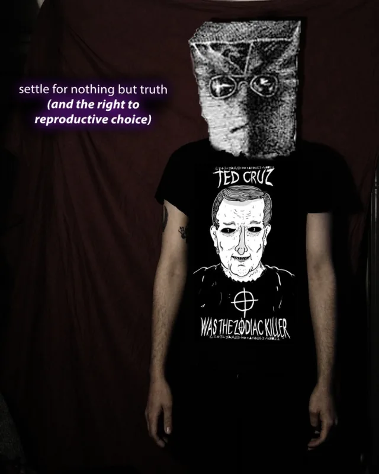
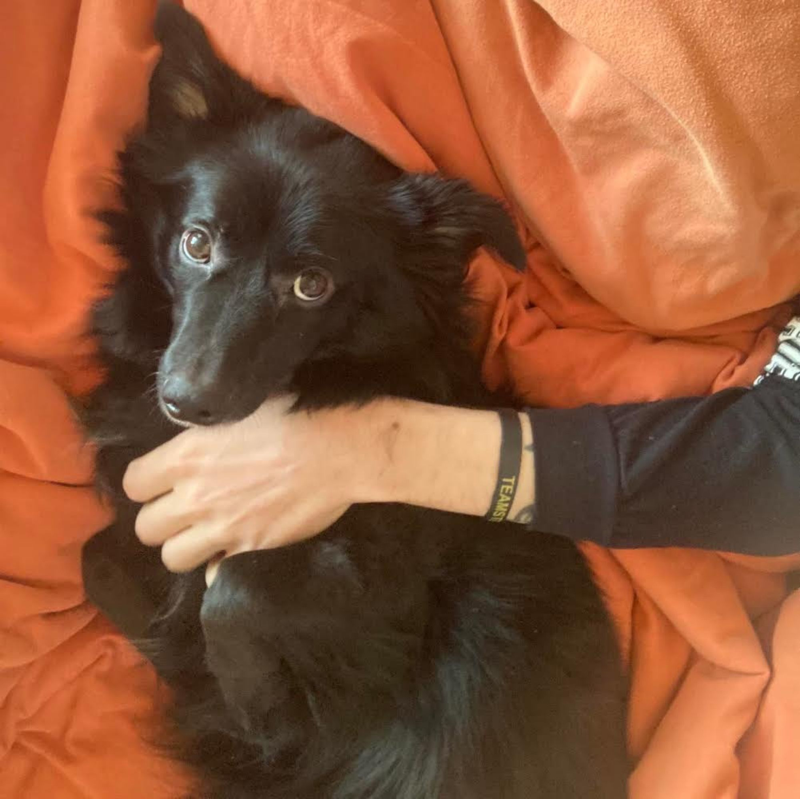

timothy faust
Welcome To My Web Site!!
My name is Timothy Faust and I write about healthcare. I am alternately fascinated and infuriated by the policy, practice, and infrastructure of American healthcare; how it fucks people over, and how America makes it difficult-to-impossible to live safely and freely in one’s body. I live in Milwaukee with my girlfriend and my dog, and I like black metal, short fiction, the Milwaukee Bucks, riding my bike, the Green Bay Packers, coffee with a whisper of Jameson, Japanese neo-noir, and designing tasteful, functional spreadsheets. Wow!
Email: tim.faust(at)gmail.com | Twitter: @crulge | Signal: By request
Photo credit: Laura Wing-Kamoosi
WRITING
Recent work
- Health Justice Now, Melville House, 2019
- Health Justice Now is a book I wrote as a primer for any interested layperson about “what is American healthcare, how does it work, and why do I feel fucked over all the time?” as well as an argument for single-payer health care. The book also explores broader concepts in health justice; the social and structural determinants of health, how they shake out in all kinds of people’s lives, and the massive popular movement we need if we are ever to be free in our bodies.
- “The best concise explanation of why the United States needs single-payer health care — and needs to widen the definition of health care itself.” — Washington Post
- This is also, as far as I can tell, the only health policy book which references both Trent Reznor’s Pretty Hate Machine and Wrestlemania XX.
- “In American Indie Wrestling, Bodies Are Cheap And Healthcare is Not.” Defector, 2023
- A longform piece about independent wrestlers, healthcare, and hustling. The work breaks down the body; every step is a bet with fate; and once you get the shit kicked out of you America makes it really, really hard to get better. “The blood may be fake, but the bleeding’s not.” - Dean Young
- Error: A Newsletter About Healthcare
- This is a a very infrequently issued newsletter I write about healthcare stuff that gets stuck in my craw. Fun for the whole family!
Medicare for All
Between 2017–2020, I traveled around the country in my faithful, shitty 2002 Honda CRV learning about healthcare in different parts of the country and talking to whomever I could find—church groups, political groups, schools; whomever. That work culminated in Health Justice Now, but I wrote some stuff on the way.
- “He Doesn’t Have A Plan For That.” The Baffler, 2020
- “The Transformative Potential of Single Payer.” The Outline, 2019
- “We Will Win Health Justice In America.” Splinter News, 2019
- “The Only Guide To Medicare For All That You Will Ever Need.” Splinter News, 2019
- “The Very Bad Politics of ‘Putting Healthcare Over Politics’.” Splinter News, 2018
- “The Case For Single-Payer.” Jacobin, 2017
Beyond healthcare
- “You Too Can Donate A Kidney And Still Be A Normal Cool Guy Who Pounds Brewskis.” Defector, 2023
- I donated my left kidney, Turkey, to my friend Laura and documented the process in the hope that other people might sign up to get tested.
- Palestine Speaks. Voice of Witness, 2015
- I was an assistant on Palestine Speaks, a collection of interviews about daily life in occupied Palestine.
OTHER STUFF
Goofing around
- “I Played ‘The Boys Are Back in Town’ on a Bar Jukebox Until I Got Kicked Out.” Vice, 2015
- One time I went on a date with a woman and she told me the story of how her ex had claimed he played “The Boys Are Back In Town” on repeat at a bar until he got kicked out and then proceeded to give me a blow-by-blow of my own story. Solidarity, brother.
- Update: It looks like VICE is being scrubbed from the internet because profit is a terrible thing to organize society around. I backed up this article here. Semper VICE.

- “Ted Cruz is the Zodiac Killer.” In 2016 me and my friend Rory made a t-shirt alleging ‘Ted Cruz is the Zodiac Killer,’ from a joke some of our internet friends made, and raised $70,000 for an abortion fund in Texas. Here’s some of the coverage.
- “This Ted Cruz T-Shirt Is Helping Fund Abortions.” Cosmopolitan, 2016
- “Texas Man Raises Funds For Abortion Rights With ‘Ted Cruz Was The Zodiac Killer’ Shirts.” CBS News, 2016
- “Ted Cruz is the Zodiac killer: the anatomy of a meme gone rogue.” The Guardian, 2016
- “That One Time Calling Ted Cruz a Serial Killer Worked Out in Someone’s Favor.” Houstonia Magazine, 2016
Timmy Quivers
From 2014 until 2021 I was the emcee and general manager of Party World Rasslin’, almost certainly America’s largest alternative independent wrestling promotion.
I have also worked as a groundskeeper, a haunted house jabroni, a database guy, a bar critic, the worst EMT in Houston, and the operations manager at an abortion clinic.
Talks
- “Beyond Single Payer.” Chicago, IL. 2019
- “The Case for Medicare for All: Tim Faust at the Harvard Law Forum.” Harvard Law School, 2017
- You may have heard me talk about healthcare on one of these podcasts: Death Panel, Chapo Trap House, TrueAnon, Majority Report, Current Affairs, The Zero Hour with RJ Eskow, Pod Damn America, HEAVYxMEDICAL, and others.
- I also show up in Reclaim Idaho, a documentary about the successful campaign to expand Medicaid in Ohio.
PICTURE OF MY DOG UME
